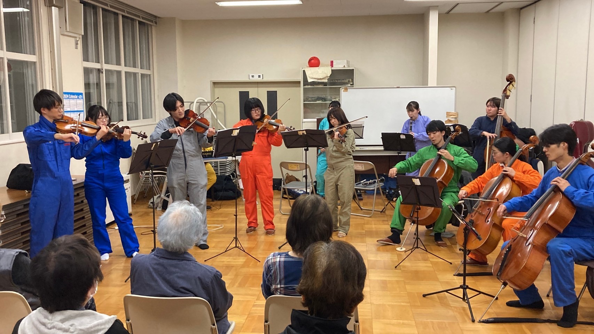
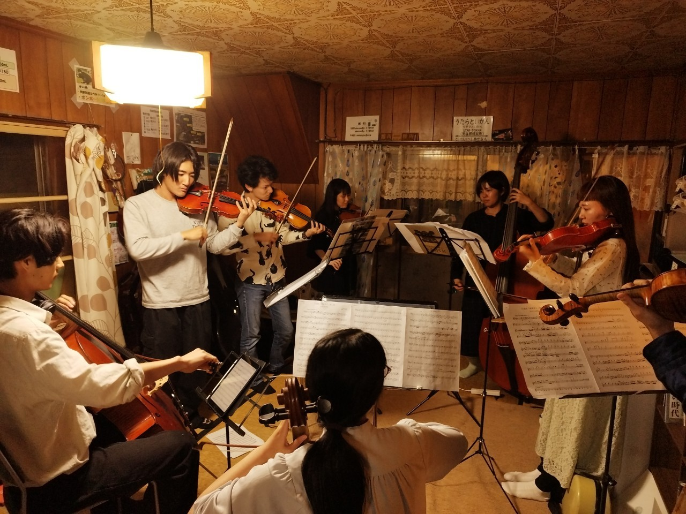
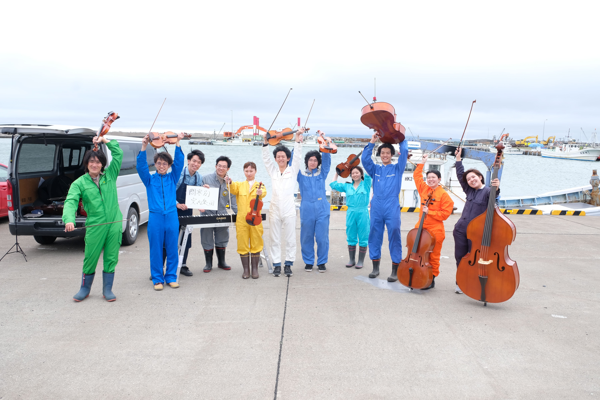
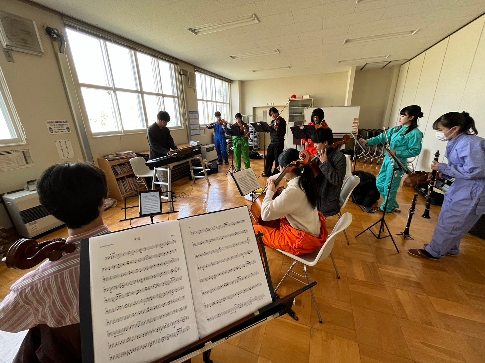
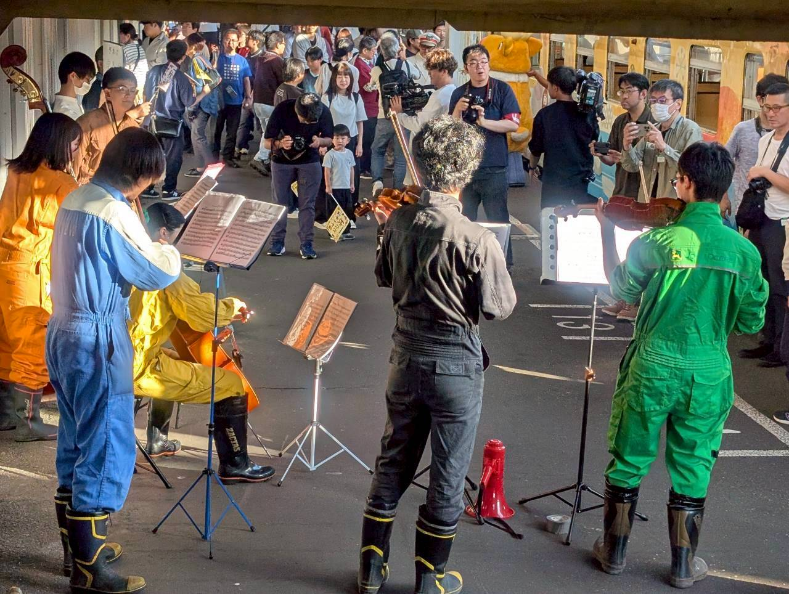
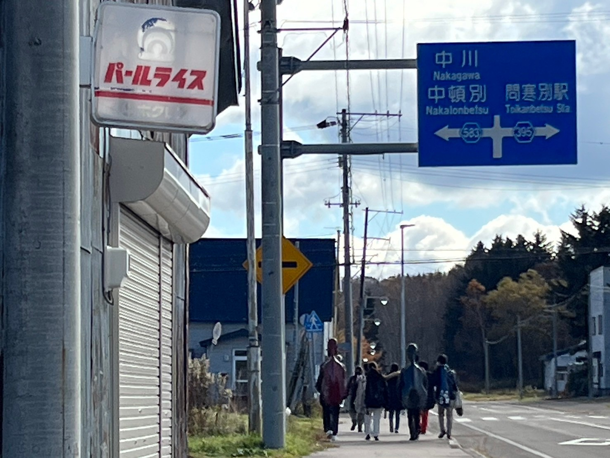
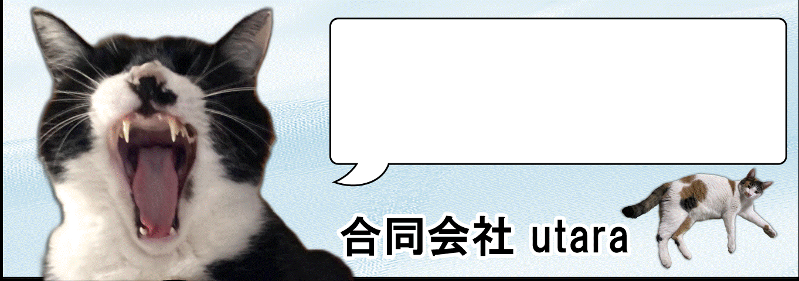

問寒別室内楽団と申します。
10代から20代の若き団員で構成された日本最北の室内楽団です。
人口170人の限界集落"幌延町問寒別"。
弦楽に無縁なこの地域で少しでも楽しさを伝えたい。そんな思いで活動しております。





20代の若き奏者を中心として構成される、自称「日本最北の室内楽団」。
幌延町問寒別のゲストハウス「ウタラといかん」および、同施設の宿泊者を中心に、弦楽合奏に縁のない地域にその魅力を伝えることを目的として、2024年6月1日に発足した。
楽団員の多くが遠隔地に在住していることから、演奏機会に応じ、参加可能なメンバーが都度集い活動を行っている。
2025年4月、幌延町文化協会に加盟。
過去の公演情報はこちら
公式Instagram：@orchestra_toikanbetsu
公式X（Twitter）：@orchestra_utara
代表（阿部由裕）個人X：@abescl
